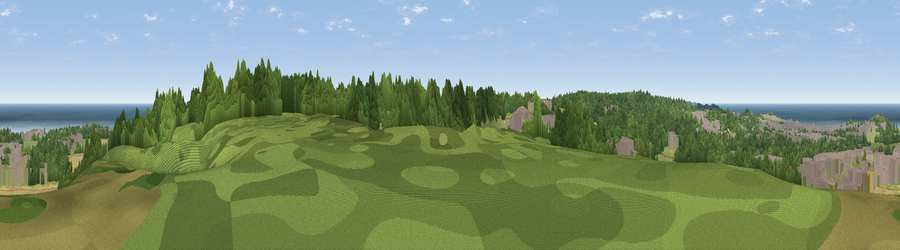

Viewpoint near Beeston Regis
#10281 in England · top 15% of its area beats it · near Beeston Regis · footpathWhere it is
The exact computed spot (TG 17025 41775). Click the marker for map links.
Public access: a public right of way passes within 32 m of this spot. Computed from Natural England's CRoW access layer and OpenStreetMap rights of way — not the legal definitive map. Always verify locally.
The view, rendered

A 360° render of this exact spot computed from the terrain model, tree cover and land cover — summer colours, afternoon light, calibrated against photographs of famous viewpoints. Real trees, hedges and buildings will differ in detail.
The panorama
Grey silhouette: terrain skyline in each direction (720 bearings, Earth curvature and refraction included). Dashed green: skyline with trees (+15 m) and buildings (+8 m) as obstacles. Blue strip: how far the ground is visible on each bearing.
Where the view opens
Wedge length = distance to the farthest visible ground on that bearing (vegetation-aware). Rings at 10, 25 and 50 km.
What fills the view
41% woodland · 20% cropland · 18% grassland · 11% built-up · 11% water
Angular shares of the visible panorama (visual magnitude), not map area. Landscape diversity 0.65 (0–1 Shannon).
Key numbers
More beautiful places nearby
The staircase of upgrades: each row has a higher view potential than everything closer. Driving times are estimates from straight-line distance, calibrated against real road routing — check an actual route before setting out.
| Place | Direction | Drive | Score |
|---|---|---|---|
| Beeston Hill | N · 2 km | ~4 min | 66.6 |
| Viewpoint near Weybourne | W · 7 km | ~14 min | 68.3 |
| Viewpoint near Claxby | WNW · 118 km | ~143 min | 71.5 |
| Viewpoint near Bempton | NW · 164 km | ~186 min | 72.8 |
| Viewpoint near Speeton | NW · 166 km | ~188 min | 74.4 |
| Viewpoint near Speeton | NW · 168 km | ~189 min | 80.0 |
| Olivers Mount | NW · 184 km | ~204 min | 80.3 |
| Viewpoint near Ravenscar | NW · 198 km | ~216 min | 82.7 |
52.92949, 1.22752 · source: screening · position refined by local search. Computed location — check access rights before visiting.